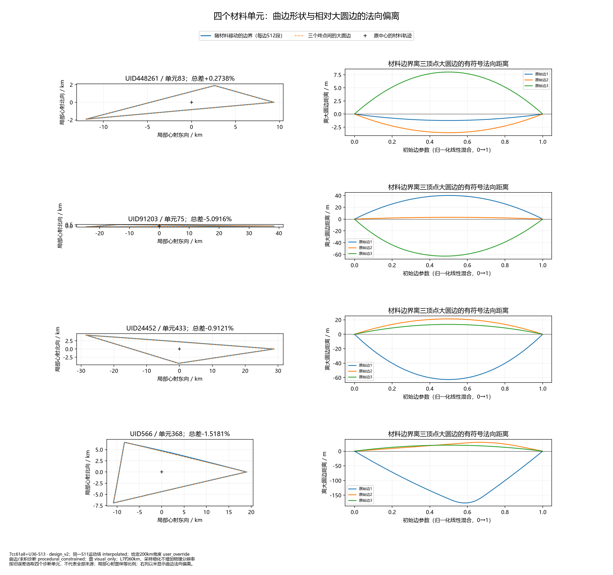
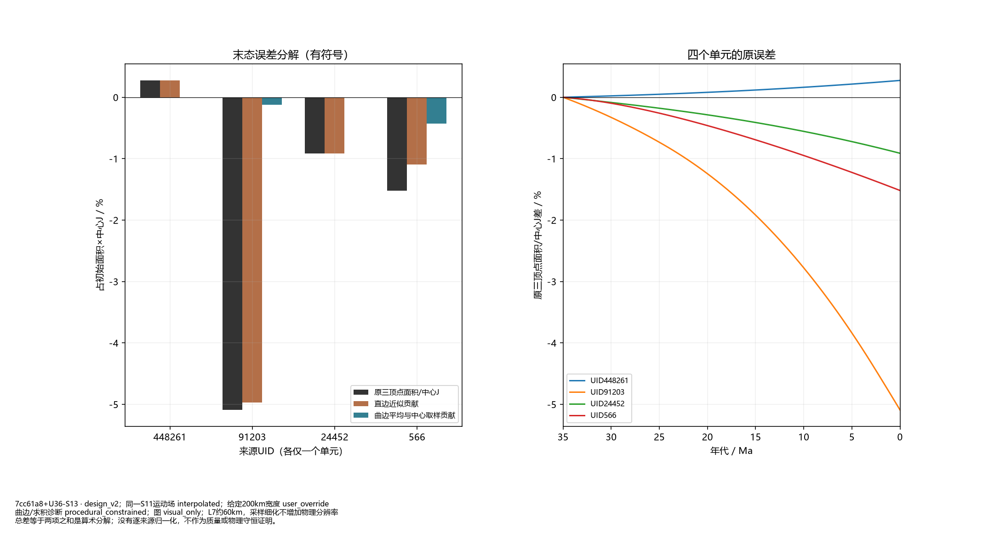
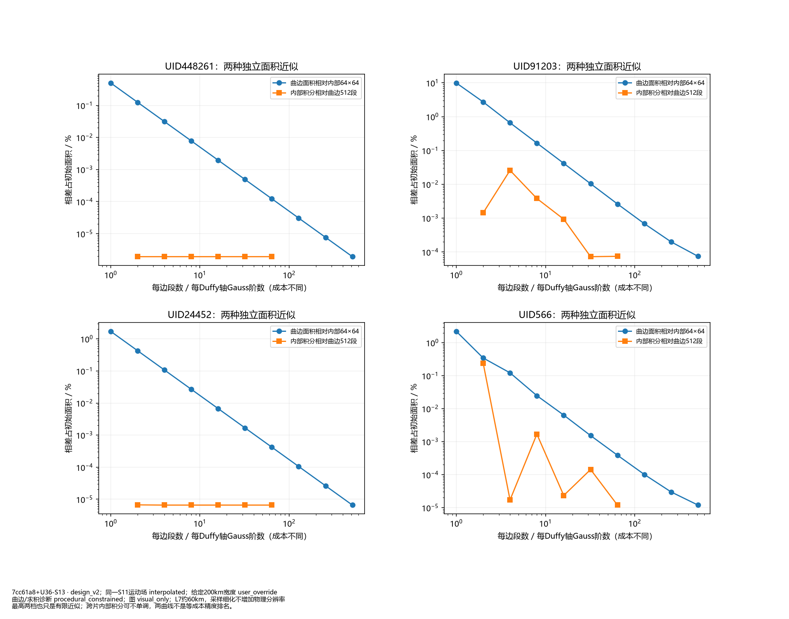
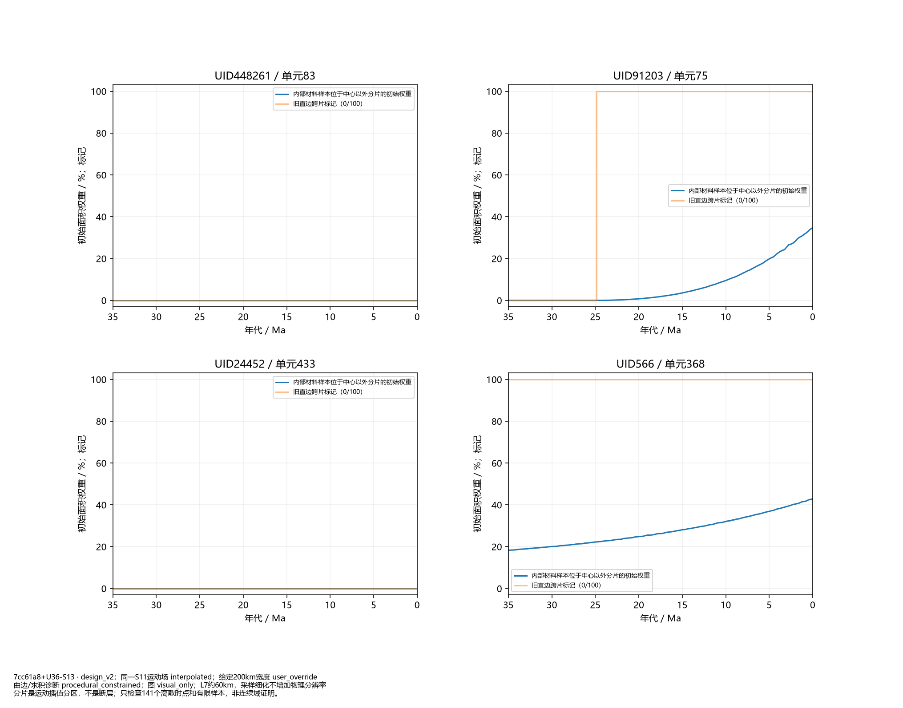

限定方法检查点；按误差选取四个单元，未接全球/B5，阶段1未通过。
冻结世界的29张标准图

按旧误差选取四个诊断单元，不代表全部来源；局部心射图保等比例；右列以米显示曲边法向偏离。

总差等于两项之和是算术分解；没有逐来源归一化，不作为质量或物理守恒证明。

最高两档也只是有限近似；跨片内部积分可不单调，两曲线不是等成本精度排名。

分片是运动插值分区，不是断层；只检查141个离散时点和有限样本，非连续域证明。